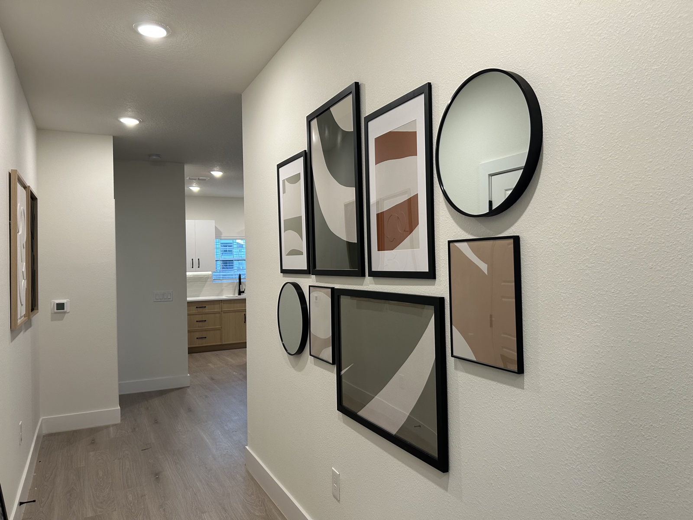
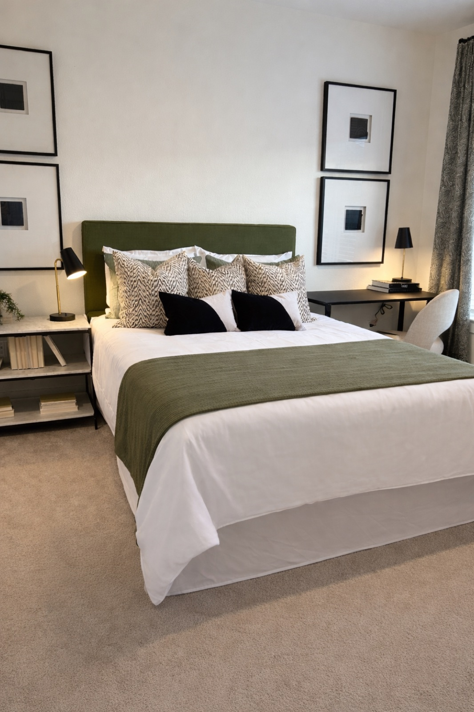
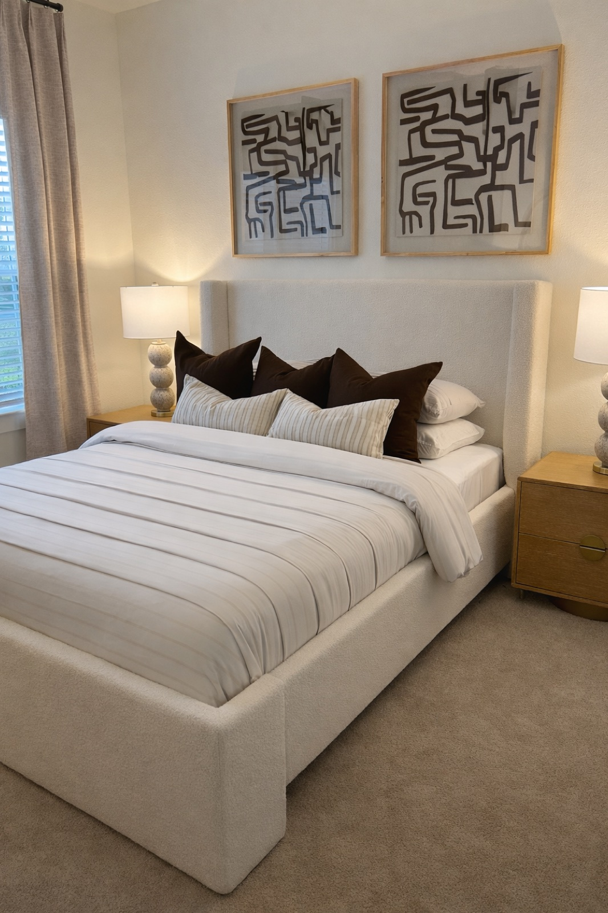
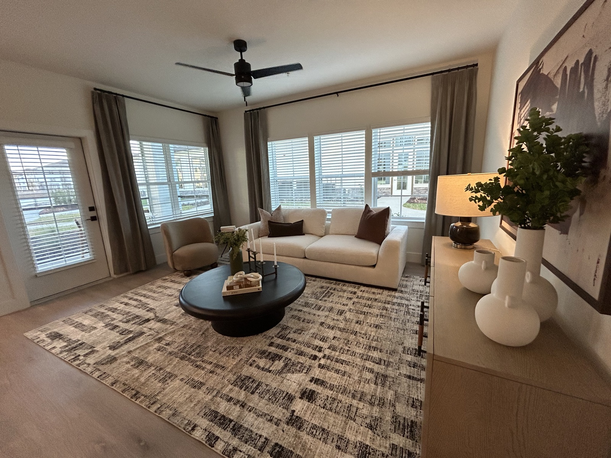

Murabella is an exercise in warmth without sentimentality. It is a space that feels deeply lived-in from the moment you enter, anchored by art that commands attention and furnishings that invite lingering.
THE BRIEF
The client sought a model unit that would signal luxury without the sterility often associated with it. The directive was clear: create a space that feels personal, collected, and warm, as though someone genuinely lives and thrives here. Every decision was made with that aspirational resident in mind.


DESIGN DECISIONS
The palette draws from deep earth tones: aged leather, raw linen, and smoked oak, punctuated by the bold graphic energy of the curated artwork. Furniture was selected for its sculptural quality as much as its comfort, with each piece contributing to an overall composition that reads as confident yet approachable.
Lighting plays a central role: layered sources create pools of warmth that shift the mood from morning clarity to evening intimacy, reinforcing the sense that this space is designed for real life.



ART CURATION
Art selection for Murabella focused on works with strong compositional presence. pieces that anchor walls and create visual hierarchy within each room. The goal was a collection that feels personal and assembled over time, never generic or decorative for decoration's sake.